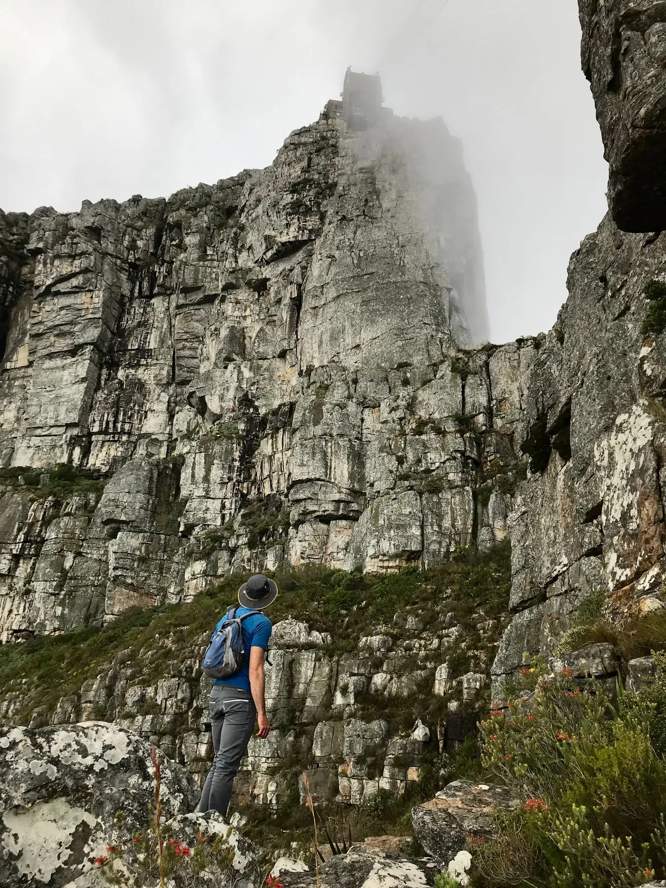
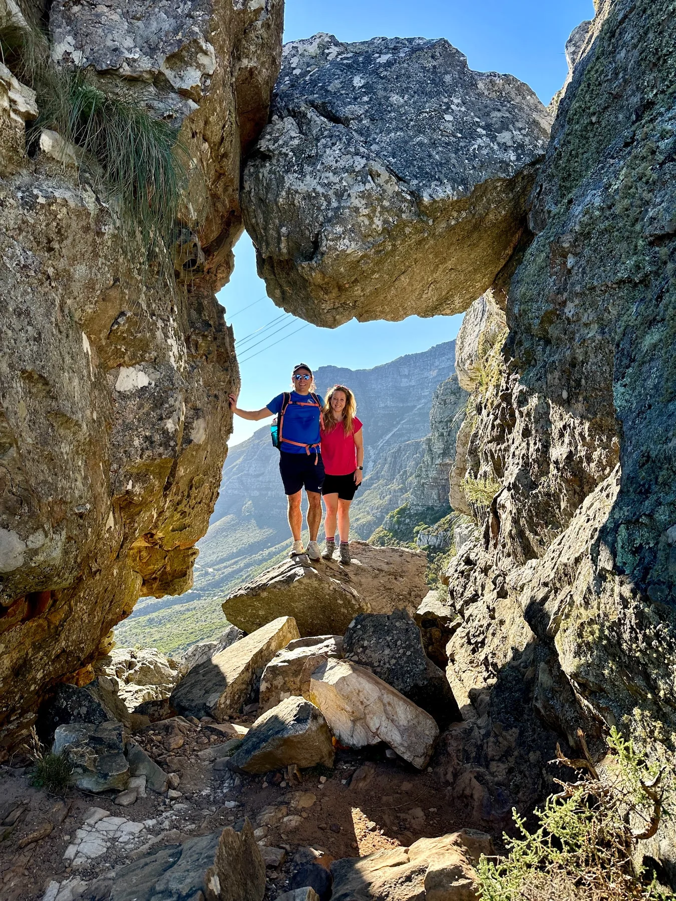
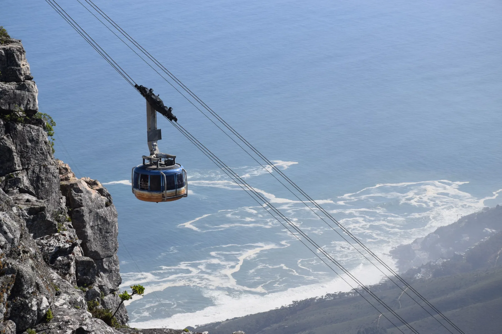
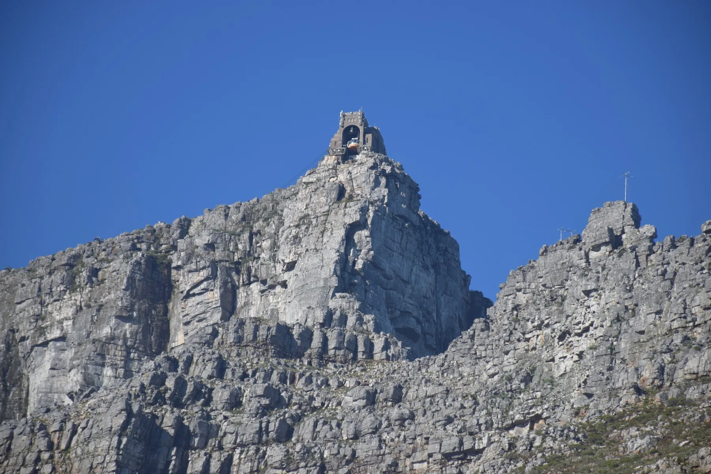

Climb below the cableway
Gain height quickly with views opening behind you.
A more adventurous Table Mountain ascent with scrambling and exposure.
India Venster is one of our favourite choices for active guests who want more variety than a straightforward climb.
The route combines steep hiking, hands-on scrambling and exposed sections with changing views across the city, Atlantic coastline and mountain.
Gain height quickly with views opening behind you.
Use hands and feet through guided rocky sections.
The route changes character as it moves toward the upper plateau.




Mountain conditions can change quickly. Your guide may adjust the start time, route or turnaround point when weather or trail conditions make that the safer choice.
Tell us your preferred date and group size. We’ll confirm availability, the most suitable start time and the current private rate.